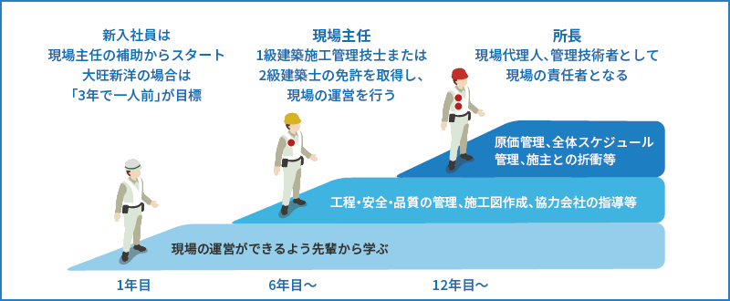

建築事業の特徴
建築事業では、官公庁施設や民間のマンション、ホテル、オフィスビルや工場施設など多岐にわたる建築物の設計、施工を行います。
建築現場は高所作業が伴います。
事故が起きないよう、徹底した安全管理が求められる現場です。
工場施設の建築現場。
大型施設では緻密な計画と進捗管理が必要です。
作業員との定例ミーティング。
施工図を元に、チェックを何度も繰り返す。
整理整頓、清潔は現場の基本です。
現場チェックをしながらも、常に美化に努めます。
現場の安全や正確な進捗のために、
作業員と密にコミュニケーションをとりながら施工を進めます。
足場を組んで、鉄骨を建てます。
この大きな施設も、2か月足らずの短期間で鉄骨が組み上がります。
建築現場では、一つのプロジェクト内で多数の工種を使い、何百、何千という部材を使います。それらが積み重なって、一つの大きな建造物ができるわけなので、監督する側にも数字に対する緻密さが求められます。
建築事業の仕事
建築施工の実作業は職人さんたちの仕事。大旺新洋は現場監督として工事がスムーズに進むように心を配ります。高所作業の多い建築では安全管理も大切な仕事です。
設計図をよく読んで、さらに詳細な「施工図」を書きます。緻密な計算が必要で、常に数字と戦っています。
大きな現場は工区分けをして一つひとつ進めます。間違いが大きくなる前の都度チェックが重要です。
職人さんたちが気持ちよく働いているのが良い現場です。段取りができるようになるまでは4～5年の経験が必要です。
高所での作業も多いので、作業員には安全第一を徹底します。ワイヤーやネットは劣化していないか必ず確認します。
大旺新洋の新本社は、1階は津波で浮遊物があたっても大丈夫なように、上階は避難場所として機能するように造られています。基準の倍を満たす工法で、命を守る建物にしました。
何十年たっても自分の仕事が残るのが建築事業。出来上がった日の達成感や、入居した人の灯りを見たときの喜びは忘れられないものです。
建築事業の現場
建築の現場は、施主様、協力会社様、大旺新洋でプロジェクトを進めていきます。プロジェクトによって規模、期間ともに様々ですが、20人ほどの作業員が1年間程度の期間をかけて進める現場が多いです。

最初のうちは現場写真の撮影などを通して仕事全体の流れに慣れます。3年ほどを目標に施工管理士の資格を取って施工図を書いていきます。大体4～5年で施工の段取りができるようになりますよ。
施工実績例